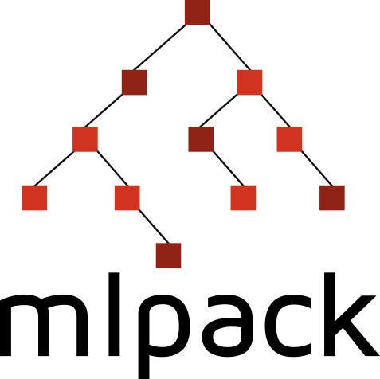

mlpack

- Machine learning swiss army knife
- Análogo a scikit-learn
- Algoritmos a cascoporro
- Últimos algoritmos disponibles

¡Rápido! Pero… C++

In the Beginning… Was the Command Line
mlpack_knn -q query_dataset.csv -r reference_dataset.csv -k 5